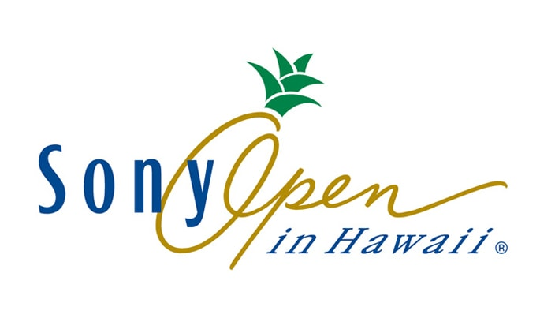
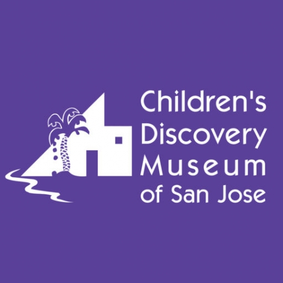

Alvin Kwok
Honolulu, Hawaii
808-741-2528
alvin808kwok@gmail.com
linkedin.com/in/alvinkwok
Summary
Highly skilles customer service representative and sales brand ambassador.
Proven to deliver consistent enguine interest in helping customers, product knowledge, and customer satisfaction.
Successful reaching the monthly sales target. Holds a B.A. degree with academic awards and is seeking new opportunities
in the technology industy. Software developer graduate at The Tech Academy.
Recognized as a capable employee and a well-rounded individual.
In 2015, Alvin graduated from Willamette University in Salem, Oregon with a Bachelor of Arts degree majoring in Math/Econ and minoring in Chinese Studies. Worked as a Chinese Liaison at the World Languages Studio promoting Chinese culture and bridging the Chinese community and the Willamette community together. Received the Outstanding Student Organization Award as the community leader. In addition, volunteered at Bush Elementary School tutoring students to improve their math skills. Spent time abroad in China, Hong Kong, and Taiwan improving the Chinese language, understanding the culture, and gaining work experience. Senior thesis: Pairwise Lottery Voting System- winning probabilities with three alternatives. The pairwise lottery system is a multiple round voting procedure that selects the winner from a pair of candidates to advance to the next round. Explored three methods: majority rules, Borda count, and instant runoff.
Alvin was born and raised in Honolulu, Hawaii. Back in high school, Alvin attended Punahou School where he spent his efforts focusing on representing the Punahou’s varsity basketball and volleyball team. Alvin became a champion in both sports earning first place division awards and state titles. He was the team leader on the varsity basketball team earning First-Team honors. In addition, Alvin was a member of the Punahou concert orchestra competing or judges and performing recitals all around the island of Oahu. He was the 3rd chair cellist. On his free time, Alvin enjoys sports, music, reading, and volunteering in the community. Alvin strives to constantly grow as a person, professionally and as a family member. To do everything to the best of his ability with good intentions. Have a positive impact on his peers. And pursue his dreams and ambitions by creating positive change in society. Peace.

Skills
click for more details!
Web Development:
HTML, CSS, and JavaScript
C# and .NET Framework
Database & SQL
Bootstrap
React
AJAX
XML
jQuery
Microsoft:
Visual Studio
GitHub, Git Bash, and GitHub Desktop
Word
Excel
PowerPoint
Outlook
Sales:
Customer Service
Effective Salesmanship
Product Knowledge
Conflict Resolution
Bartending
Barista
Cashier
Stocking
Mandarin Chinese:
Professional working proficiency
Other Skills:
G-Suite
Lotus Notes
Zoom
Latex
Beamer
Maple
Gretl
Hobbies:
Sports & Excercise
Reading & Learning
Technology & Music
Basketball & Volleyball
Piano & Cello

Work Experience
click for more details!
FOOD PANTRY
Sales Associate
Honolulu, HI
May 2019 - Current
Exemplified world-class service scoring over 100% on the company’s customer service standard behaviors and service excellence behaviors.
Maintained a well-organized and presentable store. Store is always fully stocked and all products are periodically moved to the front.
Cashier responsibilities: ringing up sales, bagging items, requesting price checks, honoring coupons and discounts, collecting payment
and giving appropriate change, counting the cash register drawer at the end of each shift, maintaining receipts, etc.
Consistently reached the stores monthly sales target.
Barista responsibilities: take orders and make coffee, tea, and various food items to customers.
WILLAMETTE INTEGRATED TECHNOLOGY SERVICES
Lab Assistance
Salem, OR
Mar 2013 - Sep 2014
Provided technological solutions to help Willamette students meet their computer needs
and to optimize learning both inside and outside of the classroom.
Assisted online learning programs aiming at providing studying materials and helping students improve their language skills.
Attended cross-department meetings representing the Chinese department to communicate information
and build stronger relationships amongst all the language departments.
Administrative responsibilities including promoting Chinese culture on the Willamette’s online portal.
BANANA REPUBLIC
Brand Ambassador- Sales
Honolulu, HI
Juny 2013- Aug 2013
Model for Banana Republic and represented the company in a positive light through brand awareness and sales.
Provided customers with optimal shopping experience in both men’s and women’s clothing department.
Generated sales by engaging and connecting with each customer and utilizing product knowledge to educate and inform customers.
Persuaded customers into registering Banana Republic’s membership card.
Maintained a neat, clean, and safe working and shopping environment.

Education
click for more details!

THE TECH ACADEMY
Software Developer
Portland, OR
Jul 2019 - Dec 2019
Courses included in the Software Developer Bootcamp:
- Computer and Technology Basics Course
- Overview of Software Development Course
- Version Control Course
- HTML and CSS Course
- Database and SQL Course
- JavaScript Course
- Visual Studio Course
- C# and .NET Framework Course
- Project Management Course
- A 2-week Live Project focused on C# and the .NET Framework
WILLAMETTE UNIVERSITY
Bachelor of Arts: Major Math/Econ, Minor Chinese Studies
Salem, OR
Aug 2011 - May 2015
Chinese Club (Outstanding Student Organization Award)
Willamette Integrated Technology Services (Chinese Liaison)
Bush Elementary School (Volunteer Math Tutor)
Hawaii Club (Prince of Maui)
Men’s Club Volleyball (4x Intramural Indoor Champion, 2x Intramural Outdoor Grass Champion)
Intramural Basketball (Runner up 3v3 Basketball)
PUNAHOU SCHOOL
High School Diploma
Honolulu, HI
Aug 1998 - Jun 2011
Varsity Volleyball (State Champion, 2x ILH Champion, & Best of the West Champion)
Varsity Basketball (ILH Champion & First-Team)
Concert Orchestra (3rd Chair Cellist)

Volunteer Experience
click for more details!

SONY OPEN
Shotlink Volunteer
Honolulu, HI
Jan 2020
Team members of the laser operators and gridders have assisted at various locations on every fairway and green.
The information collected is used by the PGA TOUR, television, plus local and worldwide media.
THE INSTITUE FOR HUMAN SERVICES
Volunteer Meal Server
Honolulu, HI
Sep 2018 - Jan 2019
Participated in food service events to feed over 30 homeless and low income families.

CHILDREN'S DISCOVERY MUSEUM
Volunteer Staff
San Jose, CA
Jul 2017 - Sep 2017
Presumed the same responsibilities as staff members which includes supervision of multiple areas of the museum, supreme customer service, and the ability to interact well with children ages 1-10.
Assisted project-coordinators to host various art and music events for over 200 visitors.